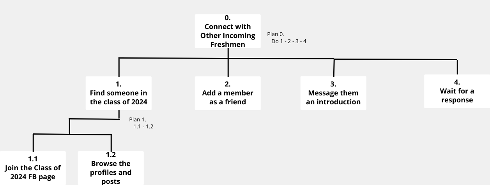
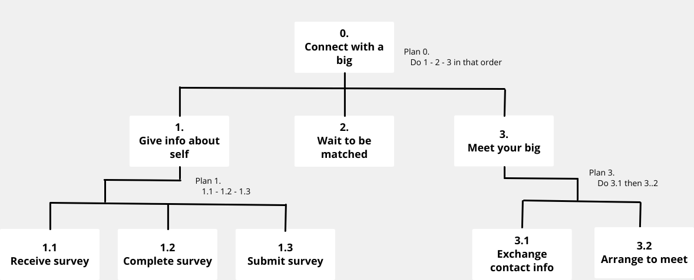
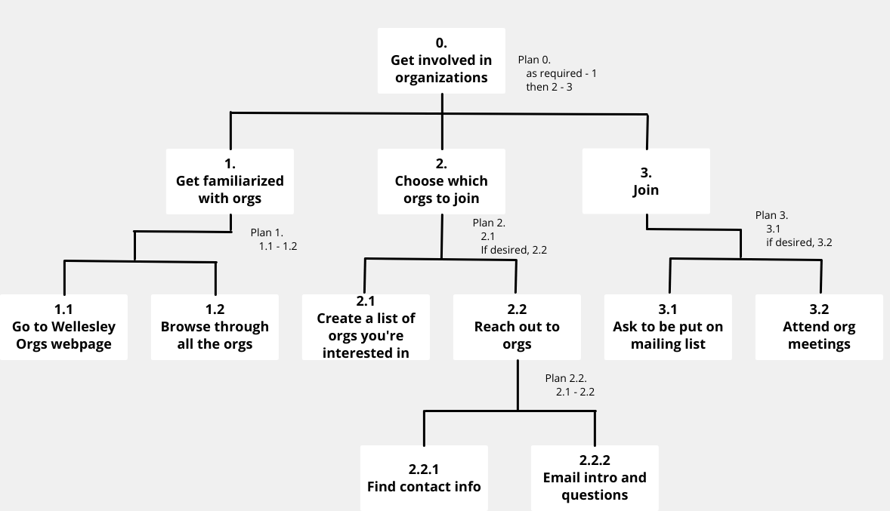

User analysis
User Interviews
We first conducted interviews with our user population, incoming college students, to identify their thoughts and concerns regarding the upcoming fall semester.
Interview #1
The interviewee was primarily concerned with the potential loss of connection and not being able to
experience a “typical first semester”. Her main obstacles and frustrations were not being able to make
friends and acquaintances, not being able to live on campus, and not being able to join organizations
or be involved on campus.
Interview #2
The interviewee wants the “normal college experience” and admits that living at home would not be
ideal. In the event that social interactions are limited to virtual meetings, she is worried that it
will be more difficult to meet and befriend her classmates. She says online interactions
can be “awkward” for people like her who aren’t accustomed to initiating conversations with
strangers. She also desires to get involved in the community at Wellesley.
Interview #3
The interviewee feels that the social aspect of would not be “complete”, especially as she thinks it
may not be as connected as other orientations she has heard of in the past. She is also concerned
with not having many connections until class starts in person, which could be months away. An ideal
situation for her would be an online experience as close to the normal experience as possible, with
students being as active as they probably would be in person. She hopes to join organizations related
to politics, art, or casual
sport.
Personas
Based on our takeaways from the interviews, we created two user personas to help guide our design process.
Persona A
Persona B
Task Analysis
We identified three high-level tasks and created a Hierarchical Task Analysis for each one.
Task 1: Connect with a Classmate
Plan 1: Do 1.1, 1.2, 1.3, and 1.4 in that order. Repeat as needed.
Plan 1.1: Do 1.1.1 and 1.1.2 in that order.
Task 2: Find a Big
Plan 1: Do 1.1, 1.2, 1.3, and 1.4 in that order. Repeat as needed.
Plan 2: Plan 1.1: Do 2.1, 2.2, and 2.3 in that order.
Plan 2.1: Do 2.1.1, 2.1.2, and 2.1.3 in that order.
Plan 2.3: Do 2.3.1 and 2.3.2 in that order.
Task 3: Explore the organizations
Plan 3: Do 3.1, 3.2, and 3.3 in that order.
Plan 3.1: Do 3.1.1 and 3.1.2 in that order.
Plan 3.2: 3.2.1 is optional, though recommended. Then do 3.2.2.
Plan 3.2.2: Do 3.2.2.1 and 3.2.2.2 in that order. Repeat as needed for each organization.
Plan 3.3: 3.3.1 is optional, though recommended. Then do 3.3.2. Repeat as needed for each organization.
Domain Analysis of Current Process
Important entities: people, websites, applications, objects that are relevant to your problem domain:
- People: Incoming students, existing students (upperclassmen), Org leaders
- Websites: Wellesley orgs website, email
- Devices/Objects: Computer or mobile device (for emailing/calling/texting)
- Applications: Google forms, email app